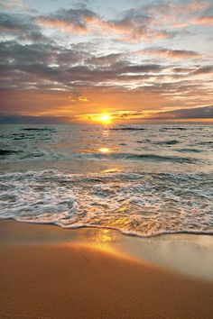

Over mij
Hallo, ik ben Ruby, ik ben 16 jaar en zit op het Vlietland college. voor het vak informatica moet ik een website maken. Welkom op mijn website!
Vrije tijd
In mijn vrije tijd spreek ik graag met vriendinnen af, daarnaast sport ik ook vaak in de avonden. Ook vind ik het leuk om te bakken. Naast dit alles vind ik het ook af en toe leuk en ontspannend om een rondje te lopen, en dan het liefste met een mooie zonsondergang.
